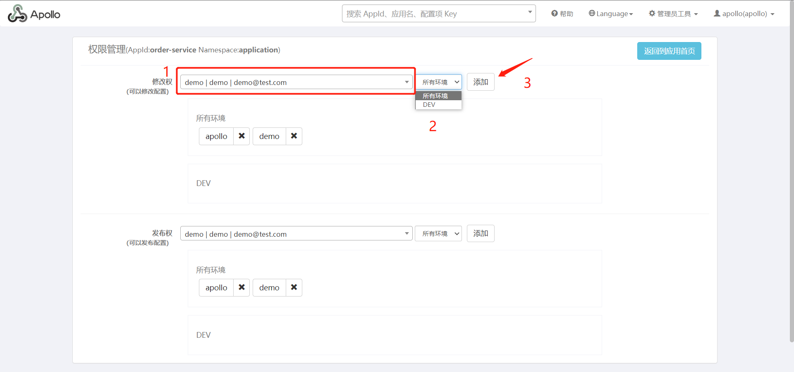
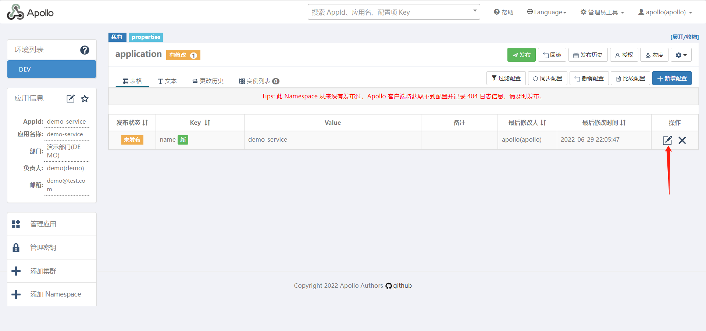
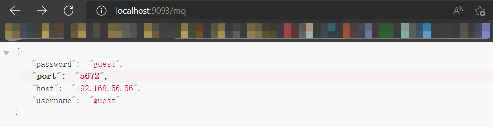
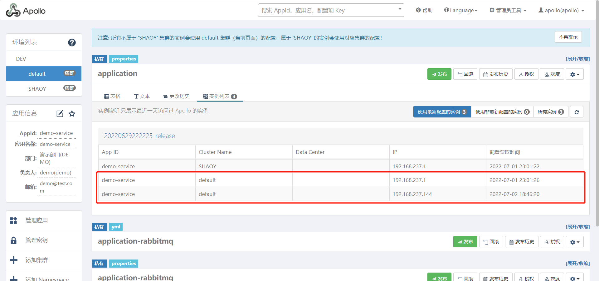

Spring Cloud Apollo配置中心
1. 背景
随着程序功能的日益复杂，程序的配置日益增多：各种功能的开关、参数的配置、服务器的地址……
对程序配置的期望值也越来越高：配置修改后实时生效，灰度发布，分环境、分集群管理配置，完善的权限、审核机制……
在这样的大环境下，传统的通过配置文件、数据库等方式已经越来越无法满足开发人员对配置管理的需求。
Apollo配置中心应运而生！
2. Apollo简介
Apollo（阿波罗）是一款可靠的分布式配置管理中心，诞生于携程框架研发部，能够集中化管理应用不同环境、不同集群的配置，配置修改后能够实时推送到应用端，并且具备规范的权限、流程治理等特性，适用于微服务配置管理场景。
Apollo支持4个维度管理Key-Value格式的配置：
- application (应用)
- environment (环境)
- cluster (集群)
- namespace (命名空间)
同时，Apollo基于开源模式开发，开源地址：https://github.com/ctripcorp/apollo
3. Apollo 核心概念
application (应用)
- 这个很好理解，就是实际使用配置的应用，Apollo客户端在运行时需要知道当前应用是谁，从而可以去获取对应的配置
- 每个应用都需要有唯一的身份标识 – appId，我们认为应用身份是跟着代码走的，所以需要在代码中配置，具体信息请参见Java客户端使用指南。
environment （环境）
- 配置对应的环境，Apollo客户端在运行时需要知道当前应用处于哪个环境，从而可以去获取应用的配置
- 我们认为环境和代码无关，同一份代码部署在不同的环境就应该能够获取到不同环境的配置
- 所以环境默认是通过读取机器上的配置（server.properties中的env属性）指定的，不过为了开发方便，我们也支持运行时通过System Property等指定，具体信息请参见Java客户端使用指南。
cluster (集群)
- 一个应用下不同实例的分组，比如典型的可以按照数据中心分，把上海机房的应用实例分为一个集群，把北京机房的应用实例分为另一个集群。
- 对不同的cluster，同一个配置可以有不一样的值，如zookeeper地址。
- 集群默认是通过读取机器上的配置（server.properties中的idc属性）指定的，不过也支持运行时通过System Property指定，具体信息请参见Java客户端使用指南。
namespace (命名空间)
- 一个应用下不同配置的分组，可以简单地把namespace类比为文件，不同类型的配置存放在不同的文件中，如数据库配置文件，RPC配置文件，应用自身的配置文件等
- 应用可以直接读取到公共组件的配置namespace，如DAL，RPC等
- 应用也可以通过继承公共组件的配置namespace来对公共组件的配置做调整，如DAL的初始数据库连接数
4. Apollo 特性
正是基于配置的特殊性，所以Apollo从设计之初就立志于成为一个有治理能力的配置发布平台，目前提供了以下的特性：
- 统一管理不同环境、不同集群的配置
- Apollo提供了一个统一界面集中式管理不同环境（environment）、不同集群（cluster）、不同命名空间（namespace）的配置。
- 同一份代码部署在不同的集群，可以有不同的配置，比如zookeeper的地址等
- 通过命名空间（namespace）可以很方便地支持多个不同应用共享同一份配置，同时还允许应用对共享的配置进行覆盖
- 配置修改实时生效（热发布）
- 用户在Apollo修改完配置并发布后，客户端能实时（1秒）接收到最新的配置，并通知到应用程序
- 版本发布管理
- 所有的配置发布都有版本概念，从而可以方便地支持配置的回滚
- 灰度发布
- 支持配置的灰度发布，比如点了发布后，只对部分应用实例生效，等观察一段时间没问题后再推给所有应用实例
- 权限管理、发布审核、操作审计
- 应用和配置的管理都有完善的权限管理机制，对配置的管理还分为了编辑和发布两个环节，从而减少人为的错误。
- 所有的操作都有审计日志，可以方便地追踪问题
- 客户端配置信息监控
- 可以在界面上方便地看到配置在被哪些实例使用
- 提供Java和.Net原生客户端
- 提供了Java和.Net的原生客户端，方便应用集成
- 支持Spring Placeholder, Annotation和Spring Boot的ConfigurationProperties，方便应用使用（需要Spring 3.1.1+）
- 同时提供了Http接口，非Java和.Net应用也可以方便地使用
- 提供开放平台API
- Apollo自身提供了比较完善的统一配置管理界面，支持多环境、多数据中心配置管理、权限、流程治理等特性。不过Apollo出于通用性考虑，不会对配置的修改做过多限制，只要符合基本的格式就能保存，不会针对不同的配置值进行针对性的校验，如数据库用户名、密码，Redis服务地址等
- 对于这类应用配置，Apollo支持应用方通过开放平台API在Apollo进行配置的修改和发布，并且具备完善的授权和权限控制
- 部署简单
- 配置中心作为基础服务，可用性要求非常高，这就要求Apollo对外部依赖尽可能地少
- 目前唯一的外部依赖是MySQL，所以部署非常简单，只要安装好Java和MySQL就可以让Apollo跑起来
- Apollo还提供了打包脚本，一键就可以生成所有需要的安装包，并且支持自定义运行时参数
5. Apollo总体设计
6. 环境准备
Java
- Apollo服务端：1.8+
- Apollo客户端：1.8+
如需运行在 Java 1.7 运行时环境，请使用 1.x 版本的 apollo 客户端，如 1.9.1
MySQL
- 版本要求：5.6.5+
Apollo的表结构对
timestamp使用了多个default声明，所以需要5.6.5以上版本。
下载Quick Start安装包
Apollo准备好了一个Quick Start安装包，只需要下载到本地，就可以直接使用，免去了编译、打包过程。
安装包共50M，如果访问Github网速不给力的话，可以从百度网盘下载。
- 从
GitHub下载checkout或下载apollo-build-scripts项目- 由于
Quick Start项目比较大，所以放在了另外的repository，请注意项目地址
- 从百度网盘下载
- 通过网盘链接下载，提取码:
9wwe - 下载到本地后，在本地解压
apollo-quick-start.zip
- 通过网盘链接下载，提取码:
- 为啥安装包要
58M这么大？- 因为这是一个可以自启动的
jar包，里面包含了所有依赖jar包以及一个内置的tomcat容器
- 因为这是一个可以自启动的
7. 安装 Apollo
创建数据库
Apollo服务端共需要两个数据库：ApolloPortalDB和ApolloConfigDB，我们把数据库、表的创建和样例数据都分别准备了sql文件，只需要导入数据库即可。
❗注意：如果你本地已经创建过Apollo数据库，请注意备份数据。我们准备的sql文件会清空Apollo相关的表。
创建ApolloPortalDB
通过各种MySQL客户端导入sql/apolloportaldb.sql即可。
创建ApolloConfigDB
通过各种MySQL客户端导入sql/apolloconfigdb.sql即可。
配置数据库连接信息
Apollo服务端需要知道如何连接到你前面创建的数据库，所以需要编辑demo.sh，修改ApolloPortalDB和ApolloConfigDB相关的数据库连接串信息。
注意：填入的用户需要具备对ApolloPortalDB和ApolloConfigDB数据的读写权限。
1 | apollo config db info |
❗注意：不要修改demo.sh的其它部分
8. 启动Apollo配置中心（搭建服务端）
确保端口未被占用
Quick Start脚本会在本地启动3个服务，分别使用8070, 8080, 8090端口，请确保这3个端口当前没有被使用。
执行启动脚本
1 | ./demo.sh start |
当看到如下输出后，就说明启动成功了！
1 | ==== starting service ==== |
异常排查
如果启动遇到了异常，可以分别查看service和portal目录下的log文件排查问题。
注：在启动apollo-configservice的过程中会在日志中输出eureka注册失败的信息，如
com.sun.jersey.api.client.ClientHandlerException: java.net.ConnectException: Connection refused。需要注意的是，这个是预期的情况，因为apollo-configservice需要向Meta Server（它自己）注册服务，但是因为在启动过程中，自己还没起来，所以会报这个错。后面会进行重试的动作，所以等自己服务起来后就会注册正常了。
访问：http://localhost:8070/ Quick Start 集成了 Spring Security，输入用户名 apollo，密码 admin 后登录。
登录成功后，首页如下，Apollo 还提供了一个 SampleApp 样本案例供我们学习使用。
创建项目
点击对应的创建应用创建项目。
创建成功如下图所示
9. 使用Apollo配置中心（客户端接入服务端）
下面通过最常用、便捷的方式，即基于 Spring Boot 的集成方式来接入服务端。
添加依赖
1 | <dependency> |
配置文件
order-service03 和 order-service04 的配置信息除端口外一致。
1 | server: |
自定义配置文件实体类
order-service03 和 order-service04 的实体类代码一致。
1 | package com.springcloud.demo.config; |
控制层
order-service03 和 order-service04 的控制层代码一致。
1 | package com.springcloud.demo.controller; |
启动类
启动类需要添加 @EnableApolloConfig 注解。
order-service03 和 order-service04 的启动类代码一致。
1 | package com.springcloud.demo; |
测试
修改配置信息前
访问：http://localhost:9090/name 和 http://localhost:9091/name 结果如下：
访问：http://localhost:9090/mysql 和 http://localhost:9091/mysql 结果如下：
新增配置信息
进入项目后点击右上角的 新增配置。
添加配置项 name、mysql.username、mysql.password。
发布配置信息
将刚才添加的配置信息批量发布至应用。
修改配置信息后
控制台打印信息如下：
1 | 2022-06-29 16:43:04.222 INFO 69232 --- [Apollo-Config-1] c.f.a.s.p.AutoUpdateConfigChangeListener : Auto update apollo changed value successfully, new value: root_v2.0_password, key: mysql.password, beanName: configProperties, field: com.springcloud.demo.config.ConfigProperties.mysqlPassword |
访问：http://localhost:9090/name 和 http://localhost:9091/name 结果如下：
访问：http://localhost:9090/mysql 和 http://localhost:9091/mysql 结果如下：
以上只是 Apollo 的入门案例，后面我们会学习 Apollo 的更多高级玩法。
10. 服务端配置
应用配置
点击管理员工具下的系统参数菜单进入应用配置页面。
在应用配置页面通过organizations关键字查询部门信息，下图为默认信息。
在value一栏中添加自定义部门信息，点击保存，无特殊说明则修改完一分钟实时生效。

此时再去创建项目时，就可以选择我们刚才添加的部门了。
用户管理
点击管理员工具下的用户管理菜单进入用户管理页面。
填写用户信息，点击提交，无特殊说明则修改完一分钟实时生效。
此时再去创建项目时，就可以选择我们刚才添加的用户了。如下图，我们给 product-service 项目分配了负责人 demo，如果使用demo登录的话，则只能看到他自己负责的项目。而 apollo 用户是超级管理员所以可以看到所有项目。
权限分配
进入项目后点击右上角的授权按钮，进入权限管理页面。
可以给指定用户添加对该应用的修改权和发布权，比如 order-service 是 apollo 创建的，但是我授权给了 demo，demo再登录时也就可以操作这个项目了。

删除应用（项目）
点击管理员工具下的删除应用、集群、AppNamespace菜单进入对应页面。
在删除应用栏目中的 AppId 处填写应用 id 先进行查询，查询到应用后点击删除应用即可。
11. 配置管理
演示如何增改删配置信息，以及如何添加
Namespace。
添加配置
进入项目后点击右上角的 新增配置。
添加配置项信息，点击提交即可，刚添加的配置信息处于未发布状态。
修改配置
点击对应配置项的修改按钮。
修改配置信息，也可填写修改说明，点击提交即可，更新后的信息如需生效要重新发布。
发布
点击发布按钮，就可以发布
发布确认
发布成功后，发布状态已设置为已发布
回滚
回滚代表恢复至上一次的发布状态，比如刚刚发布的值是 order-service-2.0，回滚以后会恢复至上一次发布的 order-service。
确认回滚
删除配置
点击对应配置项的删除按钮。
删除配置信息后如需生效要重新发布。
添加Namespace
如果配置项过多的情况下，可以通过 Namespace 来进行管理，Namespace 就相当于一份配置文件。
进入项目后点击左下角添加Namespace。
选择创建Namespace，类型这里需要说明一下：
public：公共配置，其他应用也可以使用；private：私有配置，仅限本应用使用。
可以通过文本的方式添加多个配置项。
测试
客户端配置文件信息如下：
1 | server: |
注解方式
在启动类或配置类中添加 @EnableApolloConfig({"application", "application-rabbitmq"}) 注解并指定 Namespace，就可以直接使用 Spring 的 @Value 注解来获取配置信息，${} 中对应 Apollo 中的 key，:后跟默认值。
1 | package com.springcloud.demo.controller; |
访问：http://localhost:9093/mq 结果如下：

API方式
我们可以通过以下代码读取 Apollo 中的配置信息。
1 | package com.springcloud.demo.controller; |
访问：http://localhost:9094/mq结果如下：
公共配置
刚才添加 Namespace 时我们选择的是 private 私有配置，仅限本项目使用，如果有一些配置我们所有项目都需要使用，可以通过公共配置实现。
添加公共配置
比如我们先创建一个公共项目 common-service。
然后创建公共的 Namespace。
添加配置信息提交并发布。
值得注意的是，公共配置信息是哪个项目创建的才拥有修改和删除的权力，其他项目只能选择关联和覆盖。
关联公共配置
让 order-service 项目关联 common-service 的公共配置信息。
进入项目后点击左下角添加Namespace，选择关联公共Namespace，添加刚才创建的公共Namespace。
关联成功以后在项目首页可以看到关联的配置信息，且只能选择覆盖此配置，不能删除和修改配置信息（可以删除Namespace）。或者直接在私有配置下配置同名的配置项，同名的私有配置会比公共配置优先级高。
测试
注解方式
在启动类或配置类中添加 @EnableApolloConfig({"application", "application-rabbitmq", "DEMO.application-common"}) 注解并指定 Namespace，就可以直接使用 Spring 的 @Value 注解来获取配置信息，${} 中对应 Apollo 中的 key，:后跟默认值。
访问：http://localhost:9093/common 结果如下：
API方式
可以通过以下的方式读取 Apollo 中的配置信息。
1 | ("/common") |
访问：http://localhost:9094/common 结果如下：
12. 集群管理
在有些特殊情况下，比如部署在 A 机房的应用连接的 MySQL 服务器地址和部署在 B 机房的应用连接的 MySQL 服务器地址不一样。在这种情况下，可以通过在 Apollo 创建不同的集群来解决。
添加集群
进入项目后点击左下角添加集群，比如添加 SHAOY（欧阳数据中心)。
同步配置
集群其实就是另一个环境而已，所有的操作和前面的都一样，这里就不再赘述。有一点需要说明一下，就是同步配置功能。
假设 SHAOY 这个集群的配置信息和默认集群的配置信息只有个别地方不一致，大部分都是一致的，我们挨个添加岂不是很浪费时间？
可以看到在 SHAOY 这个集群下的 application-rabbitmq 的 Namespace 中是没有任何配置项的。Apollo 给我们提供了一个同步配置的功能。通过同步配置功能，可以使多个环境、集群间的配置保持一致，需要注意的是，同步完之后需要发布后才会对应用生效。
既然是将默认集群环境的配置同步至 SHAOY 环境中，那就在默认环境中选择需要同步的 Namespace，点击同步配置按钮。
勾选需要同步的配置，选择要同步到哪个集群，然后点击下一步。
点击同步按钮以后配置将同步成功，同步完之后需要发布后才会对应用生效。
然后发布配置。
测试
配置文件中通过 apollo.cluster 指定集群名称。
1 | server: |
之前的代码无需做任何改变，访问：http://localhost:9093/mq 结果如下：
13. 多环境部署方案
多环境部署方案我们在 Linux 环境下搭建，不再使用 Quick Start 脚本。
当项目要上线部署到生产环境时，项目的配置比如数据库、缓存、队列等服务器的地址都会发生改变，这时候就需要通过 Apollo 为生产环境添加配置。目前 Apollo 预先定义的环境为：
- DEV：Development environment 开发环境，用于开发者调试使用；
- FAT：Feature Acceptance Test environment 功能验收测试环境，用于软件测试者测试使用；
- UAT：User Acceptance Test environment 用户验收测试环境（仿真环境），用于生产环境下的软件测试者测试使用
- PRO：Production environment 生产环境，最终上线环境。
Apollo 也支持自定义环境。具体方式可以参考官方文档：部署&开发遇到的常见问题 (apolloconfig.com)
这里我们要明确一些信息：
Portal部署在生产环境的机房，通过它来直接管理FAT、UAT、PRO等环境的配置即可；Config Service、Admin Service和ApolloConfigDB在每个环境都单独部署；- 应用需要配置指定的环境，默认为
DEV。
总结下来就是：一套 Portal 可以管理多个环境，但是每个环境都需要独立部署一套 Config Service、Admin Service 和 ApolloConfigDB。
服务器地址说明
101.133.158.45
apollo-portal，公共的 Portal
DEV 环境，独立部署一套 Config Service、Admin Service，使用公共的 Portal
101.43.13.48
PRO 环境，独立部署一套 Config Service、Admin Service，使用公共的 Portal
创建数据库
101.133.158.45运行apolloportaldb.sql文件和apolloconfigdb.sql文件。101.43.13.48运行apolloconfigdb.sql文件。
最终结果如下：
调整服务端配置
Apollo 自身的一些配置是放在数据库里面的，所以需要针对实际情况做一些调整。
配置项统一存储在 ApolloPortalDB.ServerConfig 表中，如下图，在③Value的地方添加环境即可，比如 dev,pro。
或者也可以通过管理员工具 - 系统参数页面进行配置，通过 apollo.portal.envs 关键字查询并进行设置，无特殊说明则修改完一分钟实时生效。
下载安装包
从GitHub Release页面下载最新版本的apollo-configservice-x.x.x-github.zip、apollo-adminservice-x.x.x-github.zip和apollo-portal-x.x.x-github.zip即可。本小节采用这种方式，可以省去本地打包的过程。
如果需要对 Apollo 做定制开发，也可以选择通过源码构建：分布式部署指南 (apolloconfig.com) ，后面高可用环境的搭建我们就采用这种方式。
配置数据库
Apollo 服务端需要知道如何连接到你前面创建的数据库，数据库连接串信息位于上一步下载的压缩包中的config/application-github.properties中。
配置 apollo-portal 的数据库连接信息
先将
apollo-portal-x.x.x-github.zip上传至101.133.158.45服务器上。解压
apollo-portal-x.x.x-github.zip打开
config目录下的application-github.properties文件填写正确的
ApolloPortalDB数据库连接串信息，注意用户名和密码后面不要有空格！修改完的效果如下：
1 | # DataSource |
配置 apollo-configservice 的数据库连接信息
将
apollo-configservice-x.x.x-github.zip上传至101.43.13.48和101.133.158.45解压
apollo-configservice-x.x.x-github.zip打开
config目录下的application-github.properties文件填写正确的
ApolloConfigDB数据库连接串信息，注意用户名和密码后面不要有空格！修改完的效果如下：
101.43.13.48
1 | DataSource |
101.133.158.45
1 | DataSource |
配置 apollo-adminservice 的数据库连接信息
将
apollo-adminservice-x.x.x-github.zip上传至101.43.13.48和101.133.158.45解压
apollo-adminservice-x.x.x-github.zip打开
config目录下的application-github.properties文件填写正确的
ApolloConfigDB数据库连接串信息，注意用户名和密码后面不要有空格！修改完的效果如下：
101.43.13.48
1 | # DataSource |
101.133.158.45
1 | # DataSource |
配置apollo-portal的meta service信息
Apollo Portal 需要在不同的环境访问不同的 meta service(apollo-configservice) 地址，所以我们需要在配置中提供这些信息。默认情况下，meta service 和 config service 是部署在同一个JVM进程，所以 meta service 的地址就是 config service 的地址。
对于 1.6.0 及以上版本，可以通过 ApolloPortalDB.ServerConfig 中的配置项来配置 Meta Service 地址。
新版本配置方式
通过 apollo.portal.meta.servers 添加 meta service(apollo-configservice) 地址，类似以下方式，修改完需要重启生效。
1 | { |
旧版本配置方式
打开apollo-portal-x.x.x-github.zip中config目录下的apollo-env.properties文件。
假设 DEV 的 apollo-configservice 未绑定域名，地址是 1.1.1.1:8080，FAT 的 apollo-configservice 绑定了域名 apollo.fat.xxx.com，UAT 的 apollo-configservice 绑定了域名 apollo.uat.xxx.com，PRO 的 apollo-configservice 绑定了域名 apollo.xxx.com，那么可以如下修改各环境 meta service 服务地址，格式为${env}.meta=http://${config-service-url:port}，如果某个环境不需要，也可以直接删除对应的配置项，参考案例如下：
1 | dev.meta=http://1.1.1.1:8080 |
如果采用旧版本配置方式，本小节配置方案如下：
1 | local.meta=http://localhost:8080 |
除了通过
apollo-env.properties方式配置 meta service 以外，apollo 也支持在运行时指定 meta service（优先级比apollo-env.properties高）：通过 Java System Property
2
>
- 可以通过 Java 的 System Property
${env}_meta来指定- 如
java -Ddev_meta=http://config-service-url -jar xxx.jar- 也可以通过程序指定，如
System.setProperty("dev_meta", "http://config-service-url");通过操作系统的 System Environment
2
>
- 如
DEV_META=http://config-service-url- 注意 key 为全大写，且中间是
_分隔
启动
安装服务器都进入对应安装包的 script 目录，执行 startup.sh 文件。
启动顺序为
- 101.133.158.45 首先启动 Portal，然后启动ConfigService 再启动 AdminService
- 101.43.13.48 启动 ConfigService 再启动 AdminService
先访问：http://101.133.158.45:8080 和 http://101.43.13.48:8080 看看 Eureka 以及各服务是否正常启动，如下：

再访问：http://101.133.158.45:8070 输入 Apollo/admin 进行登录，点击案例项目 SampleApp 进入项目首页，看到多环境说明搭建成功，后续的操作就和之前讲的一样了，这里就不再过多赘述。
14. 高可用环境搭建
分析
数据库高可用
方案很多，比如双主结构、主从结构、异地备份等等，还可以选择第三方云数据库服务，让云服务厂商去保证数据库的高可用性，这样不仅比自己实现起来更可靠、更轻松，而且还方便管理等。
AdminService 高可用
在 Apollo 中所有的 Admin Service 都会注册到 Eureka 里，所以我们只需要配置多台 AdminService，数据库采用同一套即可。
ConfigService高可用
在 Apollo 的设计中每个 ConfigService 也是一个 Euerka 的注册中心，所以保证 ConfigService 高可用的前提是保证 Eureka 的高可用，Eureka 的高可用实际上就是将自己作为服务向其他服务注册中心注册自己，这样就可以形成一组互相注册的服务注册中心，以实现服务清单的互相同步，达到高可用的效果。
实践
再来一台机器 101.43.13.49 然后将 apollo-configservice-x.x.x-github.zip 和 apollo-adminservice-x.x.x-github.zip 上传至该机器，解压以后都配置 102 机器的数据库，我们搭建一个 DEV 的高可用环境。
配置数据库
将 ConfigService 和 AdminService 上传至
101.43.13.49解压
打开
config目录下的application-github.properties文件填写正确的
ApolloConfigDB数据库连接串信息，注意用户名和密码后面不要有空格！修改完的效果如下：
1 | # DataSource |
调整服务端配置
Eureka 注册中心地址存储在 ApolloConfigDB.ServerConfig 表中，如下图，在③Value的地方添加多个地址即可。
配置 apollo-portal 的 meta service 信息
Apollo Portal 需要在不同的环境访问不同的 meta service(apollo-configservice) 地址，所以我们需要在配置中提供这些信息。默认情况下，meta service 和 config service 是部署在同一个JVM进程，所以 meta service 的地址就是 config service 的地址。
对于 1.6.0 及以上版本，可以通过 ApolloPortalDB.ServerConfig 中的配置项来配置 Meta Service 地址。
新版本配置方式
通过 apollo.portal.meta.servers 添加 meta service(apollo-configservice) 地址，类似以下方式，修改完需要重启生效。
1 | { |
旧版本配置方式
打开apollo-portal-x.x.x-github.zip中config目录下的apollo-env.properties文件。
假设 DEV 的 apollo-configservice 未绑定域名，地址是 1.1.1.1:8080，FAT 的 apollo-configservice 绑定了域名 apollo.fat.xxx.com，UAT 的 apollo-configservice 绑定了域名 apollo.uat.xxx.com，PRO 的 apollo-configservice 绑定了域名 apollo.xxx.com，那么可以如下修改各环境 meta service 服务地址，格式为${env}.meta=http://${config-service-url:port}，如果某个环境不需要，也可以直接删除对应的配置项，参考案例如下：
1 | dev.meta=http://1.1.1.1:8080 |
如果采用旧版本配置方式，本小节配置方案如下：
1 | #local.meta=http://localhost:8080 |
除了通过
apollo-env.properties方式配置 meta service 以外，apollo 也支持在运行时指定 meta service（优先级比apollo-env.properties高）：通过 Java System Property
2
>
- 可以通过 Java 的 System Property
${env}_meta来指定- 如
java -Ddev_meta=http://config-service-url -jar xxx.jar- 也可以通过程序指定，如
System.setProperty("dev_meta", "http://config-service-url");通过操作系统的 System Environment
2
>
- 如
DEV_META=http://config-service-url- 注意 key 为全大写，且中间是
_分隔
启动
安装服务器都进入对应安装包的 script 目录，执行 startup.sh 文件。
启动顺序为
- 101.133.158.45 首先启动 Portal，然后启动ConfigService 再启动 AdminService
- 101.43.13.48 启动 ConfigService 再启动 AdminService
- 101.43.13.49 启动 ConfigService 再启动 AdminService
访问：http://101.43.13.48:8080 和 http://101.43.13.49:8080 看看 Eureka 以及各服务是否正常启动。
15. 灰度发布
在一般情况下，升级服务器端应用，需要将应用源码或程序包上传到服务器，然后停止掉老版本服务，再启动新版本。但是这种简单的发布方式存在两个问题，一方面，在新版本升级过程中，服务是暂时中断的，另一方面，如果新版本有BUG，升级失败，回滚起来也非常麻烦，容易造成更长时间的服务不可用。
为了解决这些问题，人们研究出了多种发布策略，比如蓝绿部署、滚动发布、灰度发布等，Apollo 采用的是灰度发布的特性。
介绍
灰度发布也叫金丝雀发布，起源是，矿井工人发现，金丝雀对瓦斯气体很敏感，矿工会在下井之前，先放一只金丝雀到井中，如果金丝雀不叫了，就代表瓦斯浓度高。
在灰度发布开始后，先启动一个新版本应用，但是并不直接将流量切过来，而是测试人员对新版本进行线上测试，启动的这个新版本应用，就是我们的金丝雀。如果没有问题，那么可以将少量的用户流量导入到新版本上，然后再对新版本做运行状态观察，收集各种运行时数据，如果此时对新旧版本做各种数据对比，就是所谓的 A/B 测试。
当确认新版本运行良好后，再逐步将更多的流量导入到新版本上，在此期间，还可以不断地调整新旧两个版本的运行的服务器副本数量，以使得新版本能够承受越来越大的流量压力。直到将100%的流量都切换到新版本上，最后关闭剩下的老版本服务，完成灰度发布。如果在灰度发布过程中（灰度期）发现了新版本有问题，就应该立即将流量切回老版本上，这样，就会将负面影响控制在最小范围内。
实践
使用 spring-cloud-demo-apollo-config 中的 order-service03 和 order-service04 两个实例来实践，order-service03 在 Windows 端运行，order-service04 在 Linux 端运行。
配置文件
order-service03的配置文件。
1 | server: |
order-service04的配置文件
1 | server: |
最终效果如下：

创建灰度
点击右上角灰度按钮，点击确定创建灰度。
新增灰度配置
新增灰度规则

灰度发布
测试
访问http://192.168.237.1:9093/name，结果如下图所示：
访问http://192.168.237.1:9093/name，结果如下图所示：
放弃灰度
确认放弃灰度以后会删除该灰度版本，并恢复为主版本的配置信息。
全量发布
全量发布将会把灰度版本的配置合并到主分支，并发布。
发布历史
可以通过发布历史来查看所有的发布记录，比如主版本发布，主版本回滚，灰度操作、灰度规则等等。
至此 Apollo 配置中心所有的知识点就学习结束了。
参考资料：
Spring Cloud 系列之 Apollo 配置中心 - 哈喽沃德先生 (mrhelloworld.com)